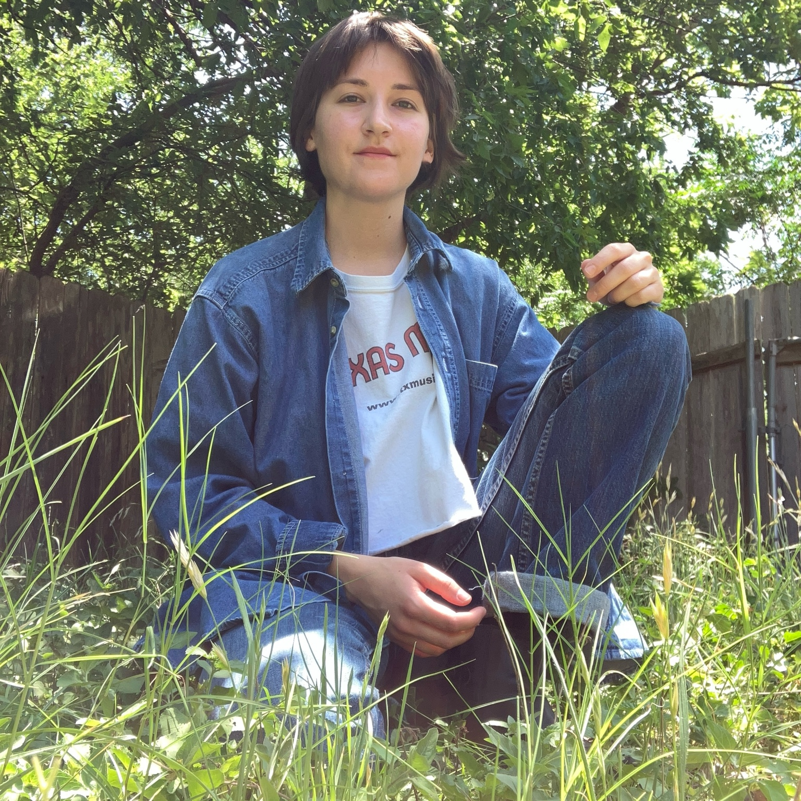

 Hello, my name is Camille Unger. I was born, raised and reside in Texas. I am currently studying electrical engineering. Before EE, I spent a lot of time waverng between different studies and jobs. I am enjoying my current studies and hope to stay the course. I write and draw things. They are my favorite past times. This site is where I put some of those things. I think the general themes/gist of my writing and drawing are grief, illness, the body and, potentially, rage. I'm not great at explainaing my work aside from what I can see. I mostly just enjoy the process of creating, so that is my main focus, thematic-stuff aside. I do like to hear other peoples interpretations. They seem to inform me more than my own explainations would. Anyways, that's about it. Thanks for lookin'. -Camille
← back